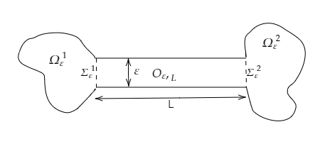
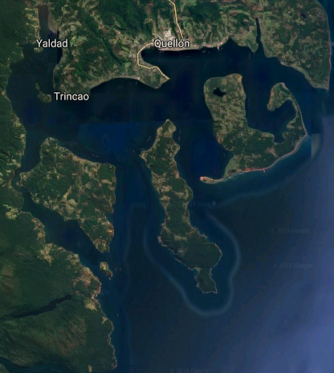
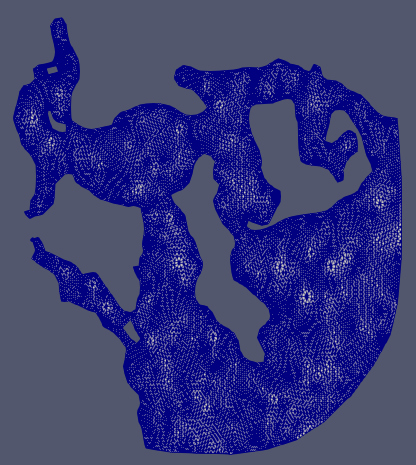

Modelo hidrodinámico de la marea roja
en la Bahía Quellón
Rodrigo Zelada Mancini
Departamento de Ingeniería Matemática
Universidad de Chile
Tabla de contenidos
- Introducción
- Formulación Variacional de Stokes
- Modelo Hidrodinámico
- Método de Volúmenes Finitos
- Discretización de Navier-Stokes
- Discretización de Advección-Difusión
- Resultados
- Shallow Water
- Navier-Stokes
- Advección-Difusión
- Conclusión
- Trabajo Futuro
Introducción
El fenómeno de las mareas rojas ha afectado en las últimas décadas las costas del sur de Chile, la región de los Lagos, la región de Aysén y la de Magallanes.
- Pérdidas económicas
- Salud
 Figura: Red Tide off the Scripps Institution of Oceanography Pier, La Jolla California.
Figura: Red Tide off the Scripps Institution of Oceanography Pier, La Jolla California.
¿Qué es la marea roja?
- Incremento masivo de microoalgas en el mar
- "Marea Roja"
- Floraciones Algales Nocivas (FAN)
Algunos mariscos que concentran estas toxinas son los choritos, almejas, machas, locos y cholgas.
El problema de la marea roja
- Para determinar si un marisco está contaminado con estas toxinas se debe hacer un análisis de laboratorio
- Se hace imprescindible elaborar un modelo que pueda determinar los episodios de marea roja.
Formulación variacional problema de Stokes
Espacios funcionales
Sea $\Omega \subset \mathbb{R}^N$ un abierto, acotado y de borde Lipschitz. Se define el espacio de las funciones test (vectoriales) a divergencia nula
$\mathcal{V} := \{\phi \in \mathcal{D}(\Omega)^N / div(\phi) = 0\}$
y también el espacio de las funciones a traza nula y divergencia nula
$V := \{v \in H_0 ^1(\Omega)^N / div(v) = 0\}$
Teorema de De Rham
Formulación variacional Stokes en dominio octopus
Sea el siguiente dominio particionado $\displaystyle{\Omega_\epsilon = \Omega_1 ^\epsilon \cup \Sigma_1^\epsilon \cup O_{\epsilon, L} \cup \Omega_2 ^\epsilon \cup \Sigma_2^\epsilon} \subset \mathbb{R}^2$ , que llamaremos Dominio Octopus. El borde del dominio se denota $\Gamma_\epsilon = \partial \Omega_\epsilon$.

Figura: Dominio octopus
$V^\epsilon := \{v \in H_0 ^1(\Omega_\epsilon)^2 / div(v) = 0 \text{ en } \Omega_\epsilon\}$
Formulación Variacional de Stokes
\[(S)\left\{ \begin{array}{c l} -\nu \Delta u + \nabla p = f & \textrm{en} \; \Omega_\epsilon \\ div(u) = 0 & \textrm{en} \; \Omega_\epsilon \\ u = u_0 & \textrm{sobre} \; \Gamma_\epsilon \end{array} \right.\] con $u_0 \in H^\frac{1}{2}(\Gamma_\epsilon)$ que cumple la condición de compatibilidad, es decir, $\displaystyle{\int_{\Gamma_\epsilon} u_0 \cdot n ds = 0}$. Se sabe que existe $g \in H^1(\Omega_\epsilon)$ tal que \[\left\{\begin{array}{ccll} div(g) & = & 0 &\text{ en } \Omega_\epsilon\\ g & = & u_0 & \text{ sobre } \Gamma_\epsilon \end{array}\right.\]
Haciendo un relevo en la condición de borde, el problema se puede estudiar variacionalmente como
\[(FVS)\left\{ \begin{array}{cl} \text{ Encontrar } v \in H^1(\Omega_\epsilon)^2 \text{ tal que }\\ (v - g) \in V^\epsilon \\ \displaystyle{\int_{\Omega_\epsilon} \nabla u : \nabla v dx} = \displaystyle{\int_{\Omega_\epsilon} f \cdot v dx}, \quad \forall v \in V^\epsilon \end{array} \right.\]Problema alternativo
El problema es que el problema anterior se vuelve muy costoso si $L$ es grande. Se define el siguiente subespacio de $V^\epsilon$
$W^\epsilon := \left\{ w \in V^\epsilon / w(x_1,x_2) = \begin{pmatrix}w_1(x_2) \\ 0 \end{pmatrix} \text{ con } (x_1, x_2) \in O_{\epsilon, L}\right\}$
$W^{\epsilon}$ es sev cerrado en $H_0 ^1(\Omega_\epsilon)^2$.
Formulación Variacional
Se plantea el siguiente problema variacional \[(FVW)\left\{ \begin{array}{cl} \text{ Encontrar } u \in H^1(\Omega_\epsilon)^2 \text{ tal que }\\ (u - g) \in W^\epsilon \\ \displaystyle{\int_{\Omega_\epsilon} \nabla u : \nabla w dx} = \displaystyle{\int_{\Omega_\epsilon} f \cdot w dx}, \quad \forall w \in W^\epsilon \end{array} \right.\] ¿Qué problema diferencial resuelve la solución de (FVW)?
Adaptación de DeRham
\[Y^\epsilon = \left\{w \in H^1(\Omega_\epsilon)^2 / w \cdot n |_{\partial \Omega_\epsilon} = 0, div(w) = 0 \text{ en } \Omega_\epsilon, w|_{O_{\epsilon, L}} = \begin{pmatrix}w_1(x_2) \\ 0\end{pmatrix} \right\}\]
\[{Y^{\epsilon}}^\perp = \left\{ \varphi \in L^2(\Omega_\epsilon) ^2 \left/ \varphi = \nabla p_k, \int_0 ^L \varphi_1 dx_1 = [p], p_k \in H^1(\Omega_k ^\epsilon)/\mathbb{R}, k = 1,2 \right\}\right.\]
Interpretación diferencial de la solución de (FVW)
Si u es solución de (FVW) y suponiendo que $\Delta u \in L^2(\Omega_\epsilon)$, entonces existe $p_k \in L^2(\Omega_k ^\epsilon)$ única salvo constante, con $k \in \{1, 2\}$ tal que \begin{equation} \left\{\begin{array}{rcl} -\Delta u + \nabla p_k & = & f \text{ en } \mathcal{D}^\prime(\Omega_k ^\epsilon) \\ div(u) & = & 0 \text{ en } \Omega_k ^\epsilon \\ u & = & u_0 \text{ en el sentido de la traza sobre } \partial \Omega_\epsilon \cap \partial \Omega_k ^\epsilon \\ u & = & \begin{pmatrix} u_1 \\ g_2 \end{pmatrix} \text{ en el sentido de la traza sobre } \Sigma_k ^\epsilon \end{array}\right. \end{equation} \begin{equation} \left\{\begin{array}{rcl} u_2 & = & g_2 \text{ en } \mathcal{D}^\prime(O_{\epsilon, L})\\ \displaystyle{-\frac{d}{dx_2 ^2}\overline{u_1} + \frac{1}{L}[p]} & = & \displaystyle{\overline{f_1}} \text{ en } \mathcal{D}^\prime((0, \epsilon)) \\ \overline{u_1}(0) = \displaystyle{\frac{1}{L}\int_0 ^L u_0(x_1,0)dx_1} &,& \overline{u_1}(\epsilon) = \displaystyle{\frac{1}{L}\int_0 ^L u_0(x_1, \epsilon) dx_1}, \\ \displaystyle{\int_{0} ^{\epsilon} u_1 dx_2} & = & \displaystyle{-\int_{\partial \Omega_\epsilon \cap \partial \Omega_1 ^\epsilon} u_0 \cdot n ds} \end{array}\right. \end{equation} \begin{array}{rl} \text{ con } \displaystyle{\overline{u_1}(\cdot)} = \displaystyle{\frac{1}{L} \int_0 ^L u_1(x_1,\cdot) dx_1}&, & \displaystyle{\overline{f_1}(\cdot)} = \displaystyle{\frac{1}{L} \int_0 ^L f_1(x_1,\cdot) dx_1} \\ \end{array}
Modelo Hidrodinámico
Modelo Hidrodinámico
Para describir la concentración c(x,t) de microalgas se utiliza la ecuación de advección(convección/transporte)-difusión:
\[\frac{\partial c(x,t)}{\partial t}+ div(c u)- div( D\nabla c) = F\]
con $u$ la velocidad de la marea, $D$ la constante de difusión del alga en el mar y $F$ el término de fuente.
Hipótesis de trabajo: $F = 0$.
Campo de velocidades
El cálculo de la velocidad de marea se hará resolviendo numéricamente las ecuaciones de Navier-Stokes
\begin{align} \displaystyle{\frac{\partial u}{\partial t} + (u \cdot \nabla) u - \nu \Delta u} & = - \displaystyle{\nabla \frac{p}{\rho} + \frac{f}{\rho}} \textrm{ en } \; \Omega \label{eqn: EcuacionesNavierStokes}\\ \nabla \cdot u & = 0 \textrm{ en } \; \Omega \label{eqn: DivergenciaNula} \end{align}con los siguientes parámetros
- $f$ la fuerza por unidad de volumen.
- $\nu$ la viscosidad cinemática de un fluido.
- $\rho$ la densidad del fluido.
Herramientas
- MATLAB (MATrix LABoratory)
- OpenFOAM (Open Source Field Operation and Manipulation)
- ParaView
Dominio
  Figura izquierda: Bahía Quellón, ubicado en Chiloé, Región de los Lagos. Extraído de Google Earth. Figura derecha: Malla de volúmenes finitos, visto con ParaView. La malla tiene 54.116 puntos, 76.341 volúmenes finitos, 218.728 caras y 162.977 caras internas.Método De Volúmenes Finitos
Discretización de Navier-Stokes
Notación: $u = (U, V, W)$ para la velocidad. Realizando el cambio de variable $\displaystyle{P = \frac{p}{\rho} - g z}$, con $z$ la altura o profundidad del mar y $g$ la aceleración de gravedad. Sean $\omega_i \subset \Omega$ volúmenes finitos, con $i \in \{1, \ldots, N\}$ y $N$ el número de volúmenes finitos, es decir $\displaystyle{\Omega = \bigcup_{i=1} ^{N} \omega_i}$. Sea $\omega_i$ un volumen finito, cuyo borde es $\displaystyle{\partial \omega_i = \bigcup_{j: \Gamma_{j} \text{ es cara de } \omega_i} \Gamma_{j}}$. Integrando sobre un volumen finito $\omega_i$ cualquiera, \[\displaystyle{\int_{\omega_i} \frac{\partial U}{\partial t} d\omega + \int_{\omega_i} u \cdot \nabla U d\omega - \nu \int_{\omega_i} \Delta U d\omega + \int_{\omega_i} \frac{\partial P}{\partial x} d\omega = 0}\]
Discretización de evolución y convección
- Término de evolución:
- Término convectivo:
\[\begin{array}{ccl}\displaystyle{\int_{\omega_i} \frac{\partial U}{\partial t} d\omega} & \approx & \displaystyle{\frac{\left|\omega_i \right|}{\Delta t} (U_i ^k - U_i ^{k-1})} \end{array}\]
\begin{equation*} \label{eq:DiscretizacionTerminoConvecti} \displaystyle{ \int_{\omega_i} u \cdot \nabla U d\omega \approx \sum_{\substack{j : \Gamma_{j} \text{ cara de } \omega_i \\ \Gamma_j \text{ cara interna } \\ (u^k \cdot n)(\Gamma_{j}) < 0}} (U_{j} ^k -U_i ^k) (u^k \cdot n) (\Gamma_{j}) \left|\Gamma_{j}\right| } \end{equation*}
Obs: Si $\Gamma_j = \partial \Omega_i \cap \partial \Omega_j$, se utiliza la condición upwind
\[U^k(\Gamma_{j}) = \begin{cases} U_i ^k \quad \text{si } (u ^k\cdot n) (\Gamma_{j}) \geq 0 \\ U_{j} ^k \quad \text{si } (u ^k\cdot n) (\Gamma_{j}) < 0 \end{cases} \]
Discretización del término de difusión y término fuente:
- Término de difusión:
- Término fuente:
\[\begin{array}{ccll} \displaystyle{ \int_{\omega_i} \Delta U d\omega} & \approx & \displaystyle{\sum_{\substack{j : \Gamma_{j} \text{ cara de } \omega_i \\ \Gamma_j \text{ cara interna } }} \frac{(U_{j} ^k - U_i ^k)}{d_c (\omega_i, \omega_{j})} \left|\Gamma_{j}\right| + \sum_{\substack{j : \Gamma_{j} \text{ cara de } \omega_i \\ \Gamma_j \text{ cara de borde } }} \frac{(U_{\Gamma_j} ^k - U_i ^k)}{d_c (\omega_i, \Gamma_{j})} \left|\Gamma_{j}\right|} \\ \end{array}\]
\[\begin{array}{ccll} \displaystyle{\int_{\omega_i} \frac{\partial P}{\partial x} d\omega} & \approx & \displaystyle{\sum_{j : \Gamma_{j} \text{ cara de } \omega_i} P_{j}n_x (\Gamma_{j})\left|\Gamma_{j}\right|} \\ \end{array}\]
-
Pero aún no está resuelto...
Complicaciones adicionales Navier-Stokes
- El término convectivo es no lineal, luego para escribir el sistema matricial se realizan iteraciones tipo punto fijo.
- Faltan ecuaciones. No hay ecuación para la presión.
La presión se define como:
- En cada volumen la presión es incógnita. Acá tienen asociadas la condición de divergencia nula.
- En los bordes en que hay condición de borde Dirichlet para la velocidad, hay una presión incógnita en las caras de dicho borde.
- En los bordes en que NO hay condición de borde Dirichlet para la velocidad, la presión debe ser dato.
Así se consiguen tantas ecuaciones como incógnitas.
Sistema matricial de Navier-Stokes
Para una cierta etapa temporal $k \in \mathbb{N}$ fija y para cada $\ell \in \mathbb{N}$, el sistema de ecuaciones se escribe en forma matricial a continuación \begin{equation*} \begin{bmatrix} A_{UU} & 0_{N\times N} & 0_{N \times N} & A_{UP} \\ 0_{N \times N} & A_{VV} & 0_{N \times N} & A_{VP} \\ 0_{N \times N} & 0_{N \times N} & A_{WW} & A_{WP} \\ A^T_{UP} & A^T_{VP} & A^T_{WP} & 0_{M \times N} \end{bmatrix} \begin{pmatrix} U^{k,\ell} \\ V^{k,\ell} \\ W^{k,\ell} \\ P^{k,\ell} \end{pmatrix} = \begin{pmatrix} b_{U} \\ b_{V} \\ b_{W} \\ b_{P} \\ \end{pmatrix} \end{equation*} \[\begin{array}{cccl} \text{donde } & U^{k,\ell} & = & (U_1 ^{k,\ell},\ldots, U_N ^{k,\ell}) \\ & V^{k,\ell} & = & (V_1 ^{k,\ell},\ldots, V_N ^{k,\ell}) \\ & W^{k,\ell} & = & (W_1 ^{k,\ell},\ldots, W_N ^{k,\ell}) \\ & P^{k,\ell} & = & (P_1 ^{k,\ell},\ldots, P_N ^{k,\ell}, P_{N+1} ^{k,\ell} \ldots P_{M} ^{k,\ell}) \\ \end{array}\]
Condiciones de Borde de Navier-Stokes
| Regiones del borde | Condición sobre u | Condición sobre P |
|---|---|---|
| Fondo | $u \cdot n = 0$ | no hay |
| Superficie | $W = -A\omega sen(\omega t)$ | no hay |
| Mar-Tierra | $u = 0$ | no hay |
| Mar-Mar | $\frac{\partial u}{\partial n} = 0$ | $P = 0$ |
Obs: La condición $P = 0$ en Mar-Mar, equivale a $p = \rho g h$ la famosa fórmula de presión hidrostática.
Discretización advección-difusión
- Término de evolución:
- Término convectivo:
- Término difusivo:
\[\begin{array}{ccl} \displaystyle{\int_{\omega_i} \frac{\partial c}{\partial t} d\omega} & \approx & \displaystyle{\frac{\left|\omega_i\right|}{\Delta t} (c_i ^k - c_i ^{k-1})} \end{array}\]
\[\displaystyle{\int_{\omega_i}div(c u) d\omega \approx \sum_{\substack{j : \Gamma_{j} \text{ cara de } \omega_i \\ \Gamma_j \text{ cara interna } \\ (u^k \cdot n)(\Gamma_{j}) < 0}} (c_{j} ^k -c_i ^k) (u^k \cdot n) (\Gamma_{j}) \left|\Gamma_{j}\right| }\]
\[\begin{array}{ccll} \displaystyle{ \int_{\omega_i} \Delta U d\omega} & \approx & \displaystyle{\sum_{\substack{j : \Gamma_{j} \text{ cara de } \omega_i \\ \Gamma_j \text{ cara interna } }} D\frac{(c_{j} ^k - c_i ^k)}{d_c (\omega_i, \omega_{j})} \left|\Gamma_{j}\right| + \sum_{\substack{j : \Gamma_{j} \text{ cara de } \omega_i \\ \Gamma_j \text{ cara de borde } }} D\frac{(c_{\Gamma_j} ^k - c_i ^k)}{d_c (\omega_i, \Gamma_{j})} \left|\Gamma_{j}\right|} \\ \end{array}\]
Condición de borde de Advección-Difusión
| Regiones del borde | Condición sobre c |
|---|---|
| Fondo | $\frac{\partial c}{\partial n} = 0$ |
| Superficie | $\frac{\partial c}{\partial n} = 0$ |
| Mar-Tierra | $\frac{\partial c}{\partial n} = 0$ |
| Mar-Mar | $\frac{\partial c}{\partial n} = 0$ |
Resultados
El computador utilizado tiene las siguientes características Procesador Intel(R) Pentium(R) CPU N3540 @2.16 GHz 2.16 GHz, 8.00 GB de memoria RAM, 4 núcleos.
Resultados: Shallow Water
Integrando en profundidad las ecuaciones de Navier-Stokes se obtienen las ecuaciones de Shallow Water
\[\begin{array}{rcl} \displaystyle{\frac{\partial}{\partial t}(hu) + \nabla \cdot (hu u^T) + f \times hu} & = & \displaystyle{-\left|g\right| \nabla (h + h_0)} \\ \displaystyle{\frac{\partial h}{\partial t} + \nabla \cdot(hu)} & = & 0 \\ \end{array}\]con $u=(u_1(t,x,y), u_1(t,x,y))$, la velocidad horizontal, $h(t,x,y)$ la distancia desde el fondo a la superficie, $h_0(x,y)$ la distancia desde el sistema de referencia y $f$ la fuerza de Coriolis.
Marea obtenida con OpenFOAM.
Malla Dinámica implementada en MATLAB.
Resultados: Navier-Stokes
Velocidad obtenida al resolver Navier-Stokes con MATLAB. $\nu=0.01$.
Tiempo de simulación: 1 día ($86400$ s). Tiempo de ejecución: 48 horas con 5 mins ($173132$ s).
Trayectoria de las partículas. Velocidad Obtenida con MATLAB, $\nu=0.01$.
Velocidad obtenida al resolver Navier-Stokes con OpenFOAM. $\nu=1$.
Tiempo de simulación: $ 7 $ días ($604800$ s). Tiempo de ejecución: 86 horas, 17 minutos y 38 segundos, ($310658$s).
Resultados: Advección-Difusión
Concentración de microalga obtenida con MATLAB, usando la velocidad obtenida con MATLAB. $\nu = 0.01$, $D=0.03$.
Concentración de microalga obtenida con MATLAB, usando la velocidad obtenida con OpenFOAM. $\nu = 1$, $D=0.03$.
Conclusión
- Solvers para caso laminar
- Tiempo de ejecución OpenFOAM vs MATLAB
- Estabilidad de las discretizaciones
- Flexibilidad en modificaciones
- Falta de datos reales